No resources match that search.
See also our dedicated CTFs page with the full Wiz Cloud Security Championship calendar (disclosure: the site's author works at Wiz) and CTFs grouped by cloud provider.

OWASP EKS Goat
Intentionally vulnerable AWS EKS environment with 20+ attack-defense labs simulating real-world misconfigurations, IAM flaws, and pod breakout paths.

Kubernetes Goat
Interactive Kubernetes security learning platform with guided workbook for GKE, EKS, AKS, or K3S. Deploy in your own cloud account.

Kubecon NA 2019 CTF
GCP-based CTF with guided workbook covering two attack and defense scenarios plus bonus challenges.

OWASP Wrong Secrets
Hands-on vulnerable application teaching secrets management anti-patterns and best practices.
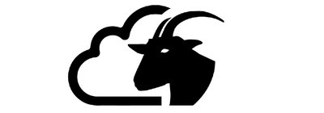
CloudGoat
Deliberately vulnerable AWS deployment tool for learning cloud penetration testing. Create scenarios in your own AWS account.

Wiz EKS Cluster Games
Vulnerable EKS pod with flag challenges across environment, includes leaderboard and requires registration.

Wiz Big IAM Challenge
CTF focused on AWS IAM privilege escalation and permission boundaries.

Wiz K8s LAN Party
Network of misconfigurations and vulnerabilities in Kubernetes cluster with leaderboard.

Wiz CTF Portal
Central hub for all Wiz CTF challenges and competition. Explore various cloud security challenges with leaderboards and prizes.

Thunder CTF
GCP-focused CTF challenges covering various cloud security scenarios.

IAM Vulnerable
AWS IAM privilege escalation playground with 31 different attack paths. Deploy with Terraform.

CloudFoxable
Deploy vulnerable AWS scenarios using Terraform. Companion to CloudFox enumeration tool.

BadZure
Deliberately vulnerable Azure infrastructure for testing and learning.

AIGoat
Deliberately vulnerable AI infrastructure from Orca Research for learning AI security.

CNAPPGoat
Multi-cloud vulnerable environment for testing CNAPP capabilities.

CICDont
Deliberately vulnerable CI/CD environment for learning pipeline security.

Bust a Kube
Vulnerable K8S cluster VMs for local VMWare environment.

Kube Security Lab
Local Kubernetes security testing environment with 14 vulnerable clusters using Docker, Ansible, and Kind.

Blue Team Labs
Defensive security scenarios and detection engineering challenges.

flaws.cloud
The classic AWS CTF by Scott Piper. Six progressive challenges covering S3, IAM, and metadata service misconfigurations - hosted live, no AWS account needed.

flaws2.cloud
Sequel to flaws.cloud with both attacker and defender tracks. Practice AWS incident response with CloudTrail and GuardDuty alongside offensive scenarios.

TerraGoat
Bridgecrew's vulnerable-by-design Terraform repo with multi-cloud misconfigurations. Ideal target for testing IaC scanners and DevSecOps pipelines.

AWSGoat
INE Labs' modern AWS vulnerable environment with serverless and container attack chains. Terraform-deployable with detailed walkthroughs.

AzureGoat
Vulnerable-by-design Azure environment covering Functions, App Services, and Storage misconfigurations with Azure-specific privilege escalation paths.

GCPGoat
Vulnerable-by-design GCP environment covering Cloud Functions, Storage, and IAM misconfigurations. Completes the INE Labs Goat trilogy alongside AWS and Azure.

CICD Goat
Vulnerable CI/CD environment with 11 challenges across Jenkins, GitLab, and GitHub Actions. Maps to the OWASP Top 10 CI/CD Security Risks.

sadcloud
NCC Group's Terraform project that spins up an AWS account full of intentional misconfigurations. Practice target for CSPM tools and detection engineering.

OWASP ServerlessGoat
OWASP's vulnerable AWS Lambda application teaching serverless-specific attacks like event injection and over-privileged functions. Maps to the Serverless Top 10.

CfnGoat
Bridgecrew's vulnerable-by-design CloudFormation templates. Practice target for IaC scanners like Checkov - learn to write and validate custom policies.

CDKGoat
Bridgecrew's intentionally insecure AWS CDK project. Helps CDK developers see what IaC scanners catch in synthesized CloudFormation before they ship.

GOAD - Game of Active Directory
Pre-built vulnerable Active Directory lab with misconfigured trusts, Kerberos abuse paths, and AD CS flaws. The standard environment for learning hybrid identity attacks.

TerraformGoat
Vulnerable multi-cloud Terraform modules covering AWS, GCP, Azure, and Alibaba Cloud misconfigurations. Self-contained scenarios you can apply, exploit, and destroy.

PurpleCloud
Terraform-driven Entra ID attack/defense lab. Provisions vulnerable tenants and hybrid joins with Microsoft Sentinel logging pre-wired for purple-team exercises.

Hacking the Cloud
Open-source encyclopedia of cloud offensive tradecraft for AWS, Azure, GCP, and Kubernetes. Maps techniques to working PoC commands with research citations.

Vulhub
Pre-built Docker Compose environments reproducing hundreds of real CVEs. Spin up Log4Shell, Spring4Shell, and container escapes in seconds for hands-on practice.

picoCTF
Carnegie Mellon CyLab's free CTF platform with archived problems and a self-paced picoGym. A common on-ramp before tackling cloud-specific challenges.

CTFtime
Central calendar and rating site for CTF competitions worldwide, with writeup archives, team rankings, and links to active events.

OverTheWire Wargames
SSH-based wargames teaching shell, networking, and crypto fundamentals. Bandit is the standard on-ramp before cloud and container CTFs.

VulnHub
Archive of downloadable vulnerable VMs for boot2root, web, and Active Directory practice. Runs offline in VirtualBox - no cloud credits required.
flAWS Challenge
Scott Piper's classic six-level AWS CTF teaching real-world S3, IAM, and Lambda misconfigurations. Free, no registration, no AWS account required.
flAWS 2
Sequel to flAWS with parallel attacker and defender tracks across ECS, IAM chaining, and CloudTrail forensics.

Hacker101 CTF
HackerOne's free browser-based CTF covering web, API, and auth challenges. Captured flags can unlock private bug bounty invites.
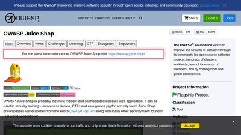
OWASP Juice Shop
Intentionally vulnerable web app covering the OWASP Top 10 and modern issues like JWT flaws and SSRF. Built-in scoreboard and CTF export for team events.
PortSwigger Web Security Academy
Free interactive labs on XSS, SSRF, deserialization, OAuth flaws, and more from the Burp Suite team. Browser-based with no setup.
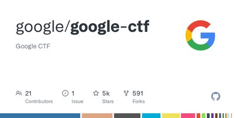
Google CTF
Public archive of Google's annual CTF challenges with source, build steps, and official writeups. Spans web, crypto, pwn, RE, and cloud scenarios.
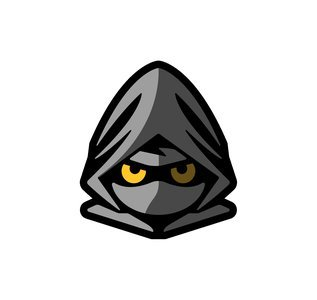
pwn.college
ASU's free university-grade security training with hundreds of dojos spanning Linux internals, assembly, reverse engineering, and exploitation.
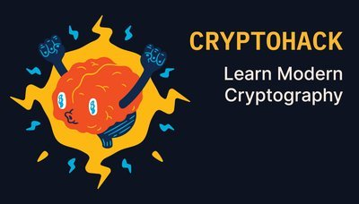
CryptoHack
Progressive cryptography challenges covering symmetric, asymmetric, ECC, and protocol-level flaws. Browser-based and free.
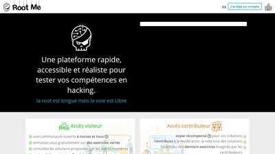
Root Me
600+ free challenges across web, crypto, forensics, network, and full-environment scenarios. A self-paced complement to OSCP-style pentest training.
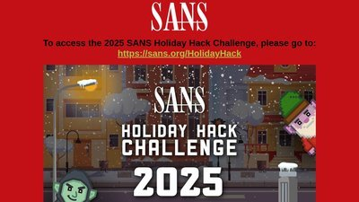
SANS Holiday Hack Challenge
Free annual holiday CTF from SANS and Counter Hack with cloud, Kubernetes, web, and forensics tracks. All prior years remain playable year-round.

Wiz Prompt Airlines
Free browser-based LLM CTF from Wiz with five challenges on prompt injection, jailbreaks, and system-prompt exfiltration.
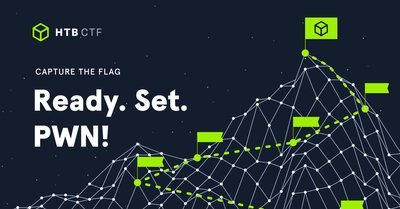
Hack The Box CTF Platform
HTB's dedicated CTF platform hosting live events and archived challenge sets, many with cloud, container, and Kubernetes tracks.
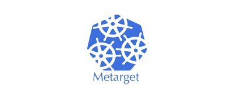
Metarget
Framework that spins up deliberately vulnerable cloud-native stacks - container runtimes, Kubernetes, and CVEs - for container-escape and privilege-escalation practice.
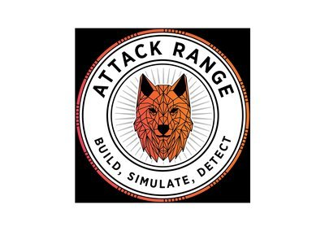
Splunk Attack Range
Deploys a cloud or local detection-engineering lab that simulates attacks and generates telemetry for building and testing Splunk detections.
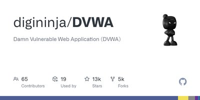
DVWA
Intentionally vulnerable web app for practising OWASP-style attacks such as SQL injection, XSS, and command injection at adjustable difficulty levels.
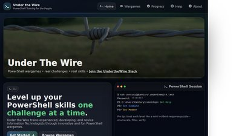
Under the Wire
PowerShell-focused wargames with progressively harder levels - great for building Windows and Azure command-line skills.
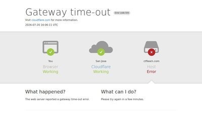
CTFlearn
Community-driven CTF platform with always-on beginner-to-intermediate challenges across crypto, forensics, web, and reversing.
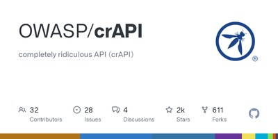
OWASP crAPI
Deliberately vulnerable microservices app for learning the OWASP API Security Top 10, deployable with Docker or Kubernetes.
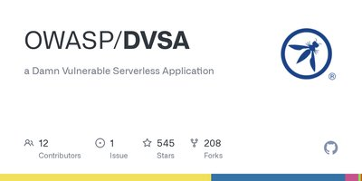
OWASP DVSA
Intentionally vulnerable serverless AWS application for learning attacks against Lambda functions, IAM roles, and secrets handling.
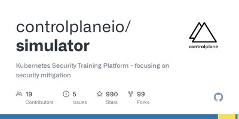
Kubernetes Simulator
Deploys intentionally misconfigured Kubernetes clusters on AWS with scenario-based exercises for practising attack and defence.
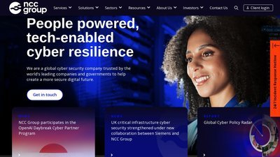
Microcorruption
Browser-based embedded-security CTF that teaches assembly-level exploitation by breaking a simulated smart lock's firmware.
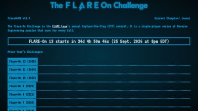
Flare-On Challenge
Annual reverse-engineering CTF from Mandiant's FLARE team, with twelve years of past challenges and official solutions online.
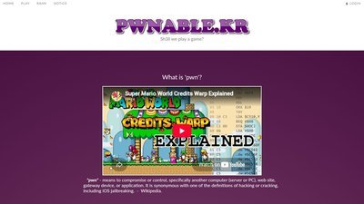
pwnable.kr
Binary-exploitation wargame with SSH-based challenges spanning stack, heap, and kernel bugs across difficulty tiers.
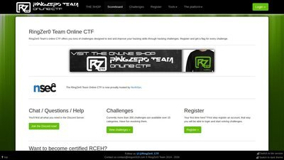
RingZer0 CTF
Always-on CTF platform with hundreds of challenges across crypto, web, forensics, and reversing, plus a global leaderboard.
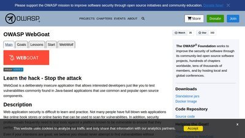
OWASP WebGoat
Deliberately insecure OWASP teaching application with guided lessons on injection, access control, and other Top 10 flaws. Runs locally via Docker.
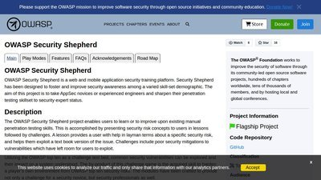
OWASP Security Shepherd
OWASP web and mobile appsec training platform with scored challenges. Run it as a team CTF or self-paced, with a built-in scoreboard.
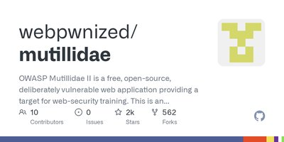
OWASP Mutillidae II
Deliberately vulnerable web app with hundreds of exploitable pages mapped to the OWASP Top 10, plus hints and difficulty toggles.
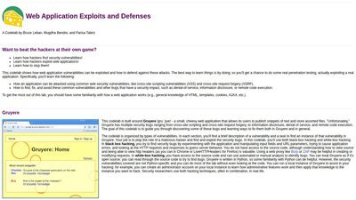
Google Gruyere
Google's intentionally vulnerable web app for learning to exploit and then fix XSS, CSRF, path traversal, and remote code execution hands-on.
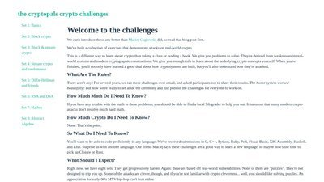
Cryptopals Crypto Challenges
Hands-on crypto challenges that teach real attacks - padding oracles, AES mode flaws, and weak RNGs - by implementing them yourself.
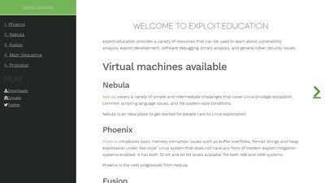
Exploit Education
Free wargame VMs (Nebula, Phoenix, Fusion) for learning Linux memory corruption and binary exploitation from the ground up.
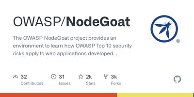
OWASP NodeGoat
OWASP's intentionally vulnerable Node.js app mapping the OWASP Top 10 to Express/MongoDB, with a guided tutorial and fix for each flaw.
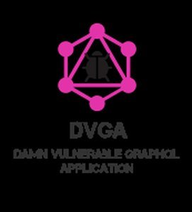
Damn Vulnerable GraphQL Application
Intentionally vulnerable GraphQL API for practising injection, batching, DoS, and authorization-bypass attacks, with beginner and expert modes.
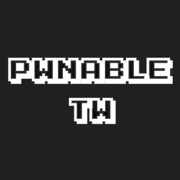
Pwnable.tw
Binary-exploitation wargame with challenges from basic overflows to advanced heap and kernel bugs, each solved against a live remote service.
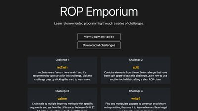
ROP Emporium
Focused return-oriented programming challenges that build ROP chains one technique at a time across multiple CPU architectures.
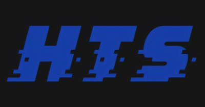
HackThisSite
Classic free hacking playground with graded web, forensics, and programming missions for beginners on upward.
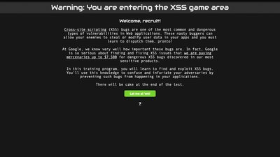
Google XSS Game
Google's six-level browser trainer for finding and exploiting real cross-site scripting bugs, with an explanation at every stage.
247CTF
Free, continuously available CTF with auto-generated web, crypto, pwn, and networking challenges and a global scoreboard.
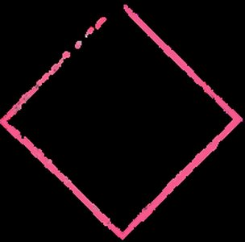
HackMyVM
Free, community-built vulnerable VMs to download and exploit boot-to-root offline, rated by difficulty with a leaderboard.
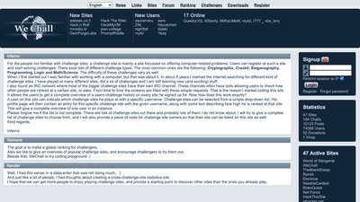
WeChall
Challenge aggregator that tracks your ranking across dozens of CTF and wargame sites, plus its own crypto and web puzzles.
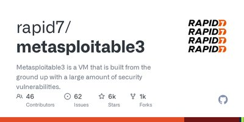
Metasploitable 3
Deliberately vulnerable Windows and Linux VMs you build locally with Vagrant for hands-on exploitation practice.
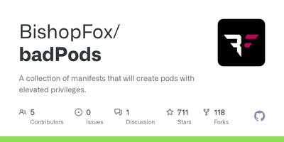
Bad Pods
Kubernetes manifests demonstrating how over-permissioned pods lead to node compromise and full cluster takeover.
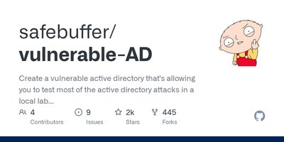
Vulnerable-AD
Script that builds a randomly misconfigured Active Directory lab for practising common domain attack paths.
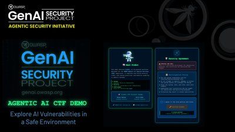
OWASP FinBot Agentic AI CTF
OWASP's agentic AI capture-the-flag: attack a simulated financial services agent to learn real agentic vulnerabilities.
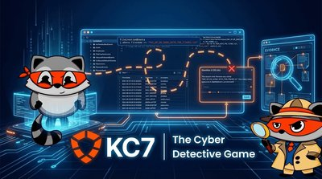
KC7
Learn security analysis by solving cyber mysteries: investigate intrusions in fictional companies' logs using KQL.
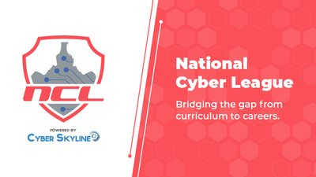
National Cyber League
Learning-centered cybersecurity competition and community for high school and college students.
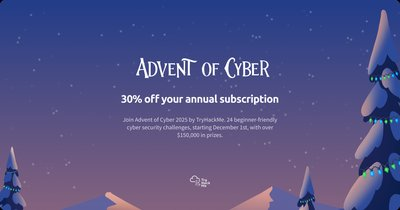
TryHackMe Advent of Cyber
TryHackMe's free 24-day December event: one beginner-friendly security challenge a day.